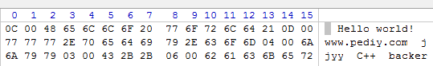
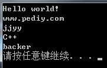

来源：https://www.cnblogs.com/qiuyuwutong/p/8708844.html
1、什么是柔性数组？
柔性数组既数组大小待定的数组， C语言中结构体的最后一个元素可以是大小未知的数组，也就是所谓的0长度，所以我们可以用结构体来创建柔性数组。
2、柔性数组有什么用途 ？
它的主要用途是为了满足需要变长度的结构体，为了解决使用数组时内存的冗余和数组的越界问题。
3、用法 ：在一个结构体的最后 ，申明一个长度为空的数组，就可以使得这个结构体是可变长的。对于编译器来说，此时长度为0的数组并不占用空间，因为数组名
本身不占空间，它只是一个偏移量， 数组名这个符号本身代 表了一个不可修改的地址常量 （注意：数组名永远都不会是指针！ ），但对于这个数组的大小，我们
可以进行动态分配,对于编译器而言，数组名仅仅是一个符号，它不会占用任何空间，它在结构体中，只是代表了一个偏移量，代表一个不可修改的地址常量！
//
柔性数组在C99中的定义是：
6.7.2.1 Structure and union specifiers
As a special case, the last element of a structure with more than one named member may have an incomplete array type; this is called a flexible array member.
在至少两个成员的结构体中，最后一个成员其类型若是不完整类型的数组类型，则该成员称为柔性数组。
柔性数组的特点:
柔性数组作为不完整类型，即使用struct s test定义了变量test之后，sizeof (test.str)肯定是不行的。哪怕给str分配了空间也不行。
因为标准规定sizeof的操作数不可以是不完整类型（还有函数类型及位字段）。
所以sizeof (struct s)或sizeof (test)，不算上柔性数组str占的空间，也是情理之中了。（如果在GCC中，单独测试array[0]，则显示其占空间为0字节）
简而言之，柔性数组只是把符号（名字）放在结构体内（压根儿就没定义），方便使用.或->语法来操作柔性数组，其所占内存空间（定义时分配）并不算在结构体变量中。
有如下的Pascal字符串：

1 //利用结构体读取Pascal串
2
3 #include <stdlib.h>
4 #include <stdio.h>
5
6 struct StrPascal
7 {
8 unsigned short int nLength;
9 char string[0]; //结构体中柔性数组
10 };
11
12 int main()
13 {
14 unsigned char PascalData[48] = {
15 0x0C, 0x00, 0x48, 0x65, 0x6C, 0x6C, 0x6F, 0x20, 0x77, 0x6F, 0x72, 0x6C, 0x64, 0x21, 0x0D, 0x00,
16 0x77, 0x77, 0x77, 0x2E, 0x70, 0x65, 0x64, 0x69, 0x79, 0x2E, 0x63, 0x6F, 0x6D, 0x04, 0x00, 0x6A,
17 0x6A, 0x79, 0x79, 0x03, 0x00, 0x43, 0x2B, 0x2B, 0x06, 0x00, 0x62, 0x61, 0x63, 0x6B, 0x65, 0x72
18 };
19
20 struct StrPascal *pStrPascal = (struct StrPascal *)PascalData; //定义结构体指针，并赋值强转后的数组指针
21
22 while ((int)pStrPascal < (int)PascalData + sizeof(PascalData)) //指针数值小于 原数组首地址加总大小 则继续
23 {
24 for (int i = 0; i < pStrPascal->nLength; i++) //按数组中存放的字符串长度输出
25 {
26 putchar(pStrPascal->string[i]);
27 }
28
29 //指针重新赋值 当前指针地址 + 2个字节（存储字符串长度所占用的内存空间） + 当前字符串长度
30 pStrPascal = (struct StrPascal *)((int)pStrPascal + sizeof(pStrPascal->nLength) + pStrPascal->nLength);
31 puts("");
32 }
33
34 system("pause");
35 return 0;
36 }运行结果：
